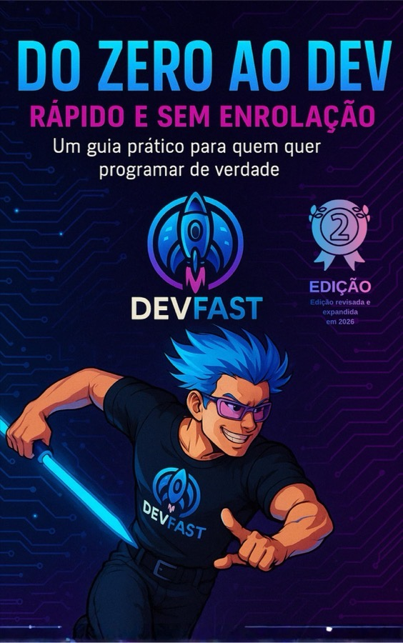

Tech Lead
Liderança técnica de squad: direção de engenharia, qualidade, operação sustentável e desenvolvimento de pessoas — com alinhamento forte ao negócio.
Gestão de engenharia · Tech Lead
Amplio a capacidade do time com critério técnico, gente e operação.
19+ anos em tecnologia; desde 2016 lidero times. Tech Lead no Itaú, instrutor na Alura, professor na FIAP — e autor para quem vive a transição de excelência técnica à liderança.
Sobre
Sou Daniel Loureiro Cintra — gestor de engenharia, educador e autor. Há mais de 19 anos em tecnologia; desde 2016 lidero times. Passei por papéis de Tech Manager e Tech Lead com equipe própria, múltiplas squads e interlocução com diretoria — sempre com o mesmo foco: pessoas, capacidade de entrega e resultado de negócio.
Hoje sou Tech Lead no Itaú, instrutor na Alura, professor na FIAP e autor de livros sobre liderança técnica e carreira. Especialização em Ciência de Dados e IA pela PUC-RS. 9 times de engenharia em 6 empresas.
Meu modo de atuar
Problema complexo? A sequência é sempre a mesma.
Três eixos: comunidade, competência e cultura.
Tech Lead
Liderança técnica de squad: direção de engenharia, qualidade, operação sustentável e desenvolvimento de pessoas — com alinhamento forte ao negócio.
Instrutor
Formação de líderes técnicos: papel, qualidade, pessoas e alinhamento engenharia–produto — com cenário real de quem vive a cadeira.
Professor
Desenvolvimento web com JavaScript — turmas presenciais e online, com foco em prática e mercado.
Gestão
Método e repertório formados na prática — com times próprios, múltiplas frentes e conversa direta com a liderança sênior.
Pessoas
1:1s, feedback, plano de carreira, autonomia e continuidade — para o time crescer sem depender de um único herói técnico.
Capacidade
Prioridade visível, rituais que cabem na agenda, qualidade no fluxo e menos interrupção — para a engenharia previsível e sustentável.
Resultados
Trade-offs claros, alinhamento com produto e stakeholders, e decisões técnicas que agem no resultado — não só no código.
Repertório
Livros
Dois livros, a mesma missão: tornar tecnologia acessível e útil — da liderança técnica ao primeiro passo como dev.
Destaque
Da excelência técnica à liderança de pessoas, sistemas e decisões
Ser Tech Lead não é o próximo degrau do desenvolvedor — é mudar de ofício. Com copilotos e IA no fluxo, a entrega acelera; julgamento e pessoas continuam sendo seus. Critério de produção: code review, qualidade, governança de IA, feedback e decisão sob pressão.

Também na estante
Guia direto para sair do zero e entrar na programação: HTML, CSS, JavaScript, React e o que o mercado espera — sem promessas mágicas. Nasceu da comunidade DevFast.
Ensino
Da Alura ao DevFast: cursos, entrevista e material gratuito com a mesma lente — cenário real, não teoria descolada.
Entrevista · Alura
Conversa sobre a jornada até a liderança técnica: o que muda quando você passa a cuidar de pessoas, critérios e decisões — não só de código.
Assistir no YouTubePapel do tech lead, influência, alinhamento com produto, feedback e uso consciente de IA.
Ver cursoClean Code, reviews em camadas, SonarCloud, IA no fluxo e gestão de dívida técnica.
Ver cursoDiagnóstico do time, delegação, feedback, desenvolvimento de pessoas e IA com responsabilidade.
Ver cursoDiscovery, roadmaps técnicos, trade-offs e decisões com impacto no negócio.
Ver cursoGit, JavaScript moderno e React — para quem já tem HTML e CSS.
Acessar apostilaCredenciais
Linha do tempo completa no LinkedIn.